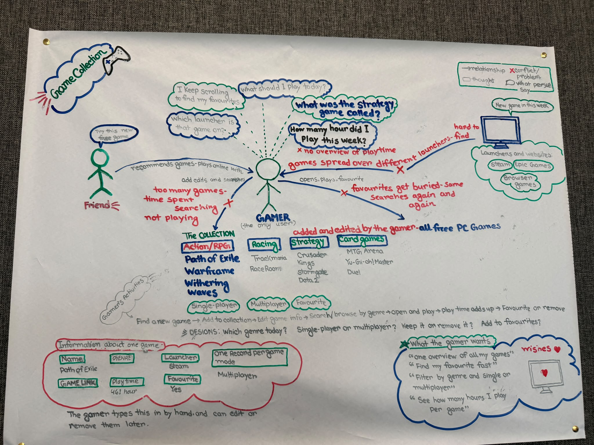
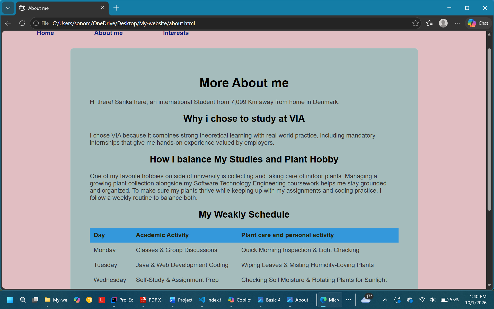
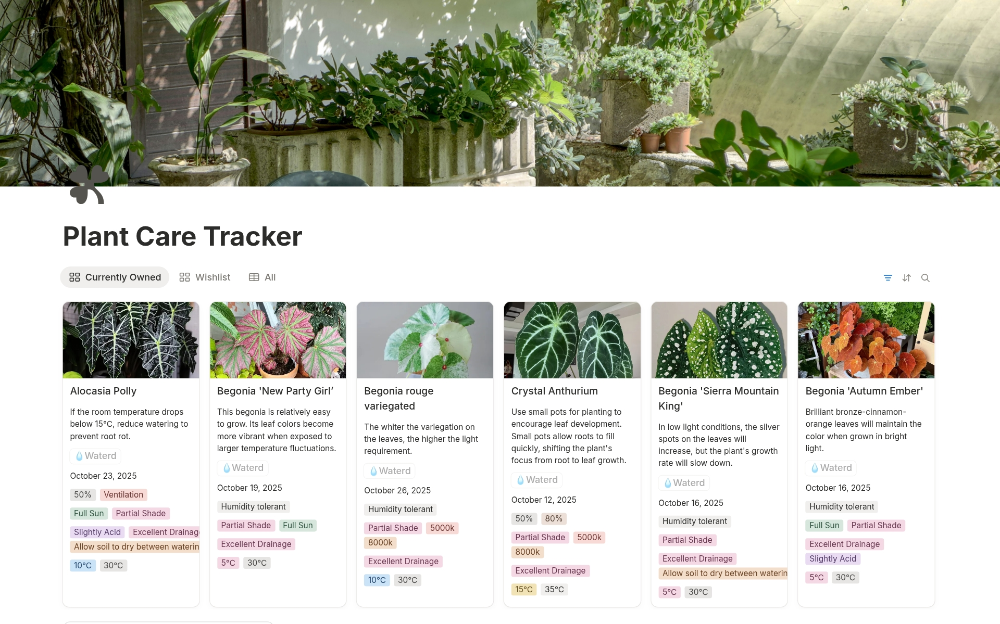
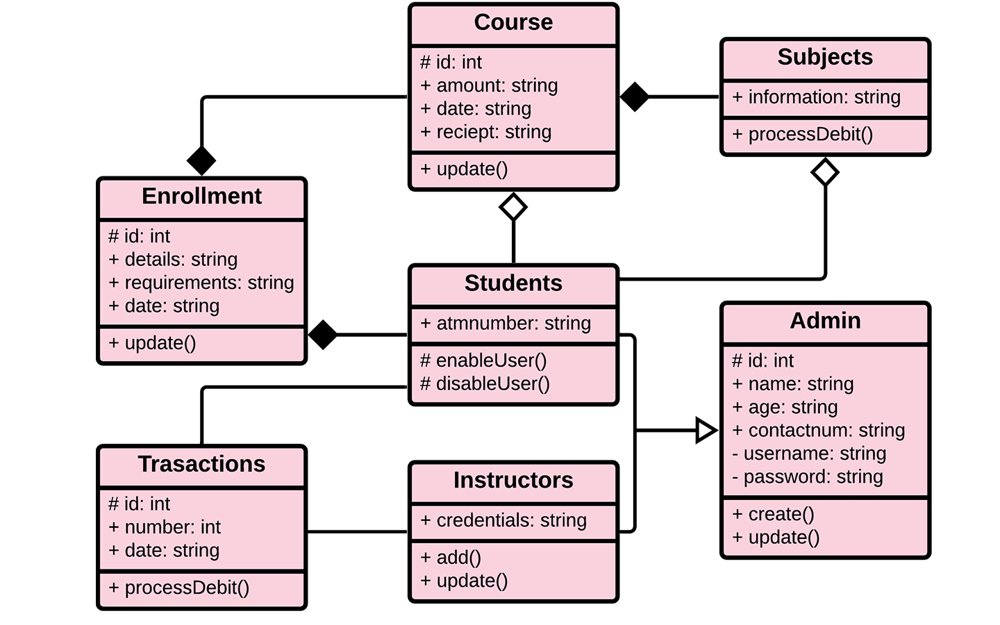

01 - Game Collection Manager
A Java desktop application created for organizing free PC games across different launchers. Allows filtering by genre, tracking play hours, and managing favourites.
Technologies: Java, OOP Concepts, IntelliJ IDEA
View Project
02 - Basic AI Quiz Companion
A simple Java application that asks interactive questions, provides instant feedback, and gives dynamic study recommendations based on user scores.
Technologies: Java, Basic Logic, VS Code
View Project

03 - Personal Portfolio Website
A responsive multi-page website built to display my profile, CV, and projects. Structured using semantic HTML and styled with CSS Flexbox and Grid
Technologies:HTML,CSS,Flexbox,CSS Grid
View Project

04 - Indoor Plant Tracker
A simple Java program designed to store indoor plant information, track daily watering schedules, and monitor plant health status.
Technologies:Java,Classes &Methods,JUnit 5
View Project

05 - Student Grade Management System
A basic desktop program that records student courses and assignment grades to automatically calculate average marks and pass/fail results.
Technologies:Java, Arrays & Lists, IntelliJ IDEA
View Project